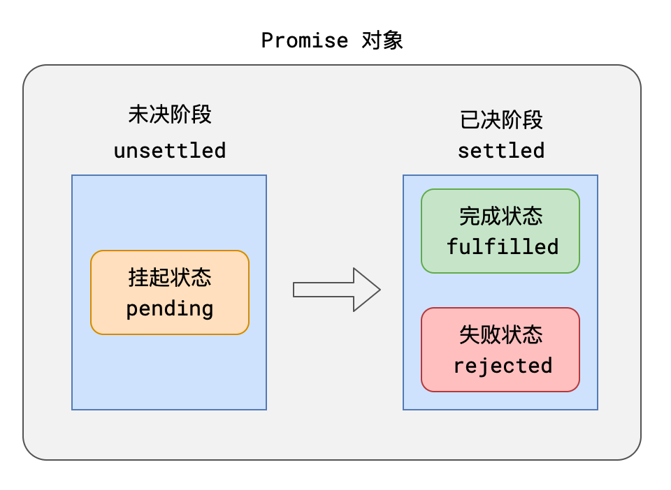
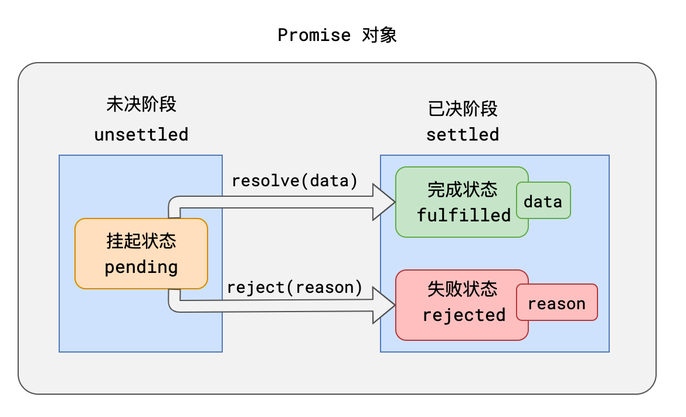

回调处理异步
- 众所周知，js 是单线程的，耗时操作都是交给浏览器来处理，等时间到了从队列中取出执行，设计到事件循环的概念，笔者也分享过，可以看以下，理解了可以更好的理解 promise。
- 我以一个需求为切入点，我模拟网络请求(异步操作)
- 如果网络请求成功了，你告知我成功了
- 如果网络请求失败了，你告知我失败了
大聪明做法
- 首先你要理解 js 代码的执行顺序，而不是是想当然的，代码其实并不是按照你书写的顺序执行的。
- 那么为什么是 undefined 呢？
- 首先当我执行 requestData 函数，开始执行函数。遇到了异步操作不会阻塞后面代码执行的，因为 js 是单线程的，所以你写的 return 成功或者失败并没有返回给 requestData，那我这个函数中，抛开异步操作，里面并没有返回值，所以值为 undefined。
function requestData(url) {
setTimeout(() => {
if (url === 'iceweb.io') {
return '请求成功'
}
return '请求失败'
}, 3000)
}
const result = requestData('iceweb.io')
console.log(result) //undefined
早期正确做法
- 早期解决方案都是传入两个回调，一个失败的，一个成功的。那很多开发者会问这不是挺好的吗？挺简单的，js 中函数是一等公民，可以传来传去，但是这样太灵活了，没有规范。
- 如果使用的是框架，还要阅读一下框架源码，正确失败的传实参的顺序，如果传参顺序错误这样是非常危险的。
- 最重要的是会形成回调地狱，非常不方便阅读和调试
function requestData(url, successCB, failureCB) {
setTimeout(() => {
if (url === 'iceweb.io') {
successCB('我成功了,把获取到的数据传出去', [{name:'ice', age:22}])
} else {
failureCB('url错误，请求失败')
}
}, 3000)
}
//3s后 回调successCB
//我成功了,把获取到的数据传出去 [ { name: 'ice', age: 22 } ]
requestData('iceweb.io', (res, data) => console.log(res, data), rej => console.log(rej))
//3s后回调failureCB
//url错误，请求失败
requestData('icexxx.io', res => console.log(res) ,rej => console.log(rej))
Promise
基本介绍
Promise 是一套专门处理异步场景的规范，它能有效的避免回调地狱的产生，使异步代码更加清晰、简洁、统一
这套规范最早诞生于前端社区，规范名称为Promise A+
该规范出现后，立即得到了很多开发者的响应
Promise A+ 规定：
- 所有的异步场景，都可以看作是一个异步任务，每个异步任务，在 JS 中应该表现为一个对象，该对象称之为Promise 对象，也叫做任务对象
- 每个任务对象，都应该有两个阶段、三个状态 
根据常理，它们之间存在以下逻辑：
- 任务总是从未决阶段变到已决阶段，无法逆行
- 任务总是从挂起状态变到完成或失败状态，无法逆行
- 时间不能倒流，历史不可改写，任务一旦完成或失败，状态就固定下来，永远无法改变
挂起->完成，称之为resolve；挂起->失败称之为reject。任务完成时，可能有一个相关数据；任务失败时，可能有一个失败原因。
- 可以针对任务进行后续处理，针对完成状态的后续处理称之为 onFulfilled，针对失败的后续处理称之为 onRejected

Promise API
ES6 提供了一套 API，实现了 Promise A+规范
基本使用如下：
// 创建一个任务对象，该任务立即进入 pending 状态
const pro = new Promise((resolve, reject) => {
// 任务的具体执行流程，该函数会立即被执行
// 调用 resolve(data)，可将任务变为 fulfilled 状态， data 为需要传递的相关数据
// 调用 reject(reason)，可将任务变为 rejected 状态，reason 为需要传递的失败原因
});
pro.then(
(data) => {
// onFulfilled 函数，当任务完成后，会自动运行该函数，data为任务完成的相关数据
},
(reason) => {
// onRejected 函数，当任务失败后，会自动运行该函数，reason为任务失败的相关原因
}
);
catch是只处理失败，不处理成功
.catch(onRejected)= .then(null, onRejected)
const pro = new Promise((resolve, reject) => {
resolve(1);
//虽然此时promise的状态已经确定，但后续代码还是会执行的
console.log(2);
//此时promise的状态已经确定，再去修改promise的状态或者数据是无效
reject(1);
});
pro.then((data) => {
console.log(3);
});
链式调用

- then 方法必定会返回一个新的 Promise,可理解为
后续处理也是一个任务 - 新任务的状态取决于后续处理（因为.then 方法是没有 resolve 和 reject，所以他会有自己的规则）
- 若没有相关的后续处理，新任务的状态和前任务一致，数据为前任务的数据
- 若有后续处理但还未执行，新任务挂起。
- 若后续处理执行了，则根据后续处理的情况确定新任务的状态
- 后续处理执行无错，新任务的状态为完成，数据为后续处理的返回值
- 后续处理执行有错，新任务的状态为失败，数据为异常对象
- 后续执行后返回的是一个任务对象，新任务的状态和数据与该任务对象一致
若没有相关的后续处理，新任务的状态和前任务一致，数据为前任务的数据
前面任务失败了，后面的任务跟着失败（在没有后续处理的情况下）
let p = new Promise((resolve, reject) => {
console.log(1);
reject(12);
});
let p2 = p.then(() => {
console.log("成功了");
});
setTimeout(() => {
console.log(p2);
}, 1000);

前面任务成功了，后面的任务跟着成功（在没有后续处理的情况下）
let p = new Promise((resolve, reject) => {
console.log(1);
resolve(12);
});
let p2 = p.catch(() => {
console.log("成功了");
});
setTimeout(() => {
console.log(p2);
}, 1000);

若有后续处理但还未执行，新任务挂起
当前面的任务还没完的时候，后续任务一定是挂起的
let p = new Promise((resolve, reject) => {
console.log(1);
setTimeout(() => {
resolve(123);
}, 2000);
});
let p2 = p.then(() => {
console.log("成功了");
});
setTimeout(() => {
console.log(p2);
}, 1000);
若后续处理执行了，则根据后续处理的情况确定新任务的状态
- 后续处理执行无错，新任务的状态为完成，数据为后续处理的返回值
- 后续处理执行有错，新任务的状态为失败，数据为异常对象
- 后续执行后返回的是一个任务对象，新任务的状态和数据与该任务对象一致
let p = new Promise((resolve,reject)=>{ console.log(1) resolve(123); }) let p2 =
p.then(
//后续处理这部分代码就是后续处理，只要你这部分的代码运行没报错就是成功，否则就是失败
//(这个在描述的是p2的状态)
//这里return的数据就是p2成功状态后携带的数据，如果是错误会携带错误的对象
//这里如果处理了但没有设置return返回值的话，那么p2所携带的值就是undefined
()=>{console.log("成功了"); return 123} ) let p2 = p.then(
//后续执行后返回的是一个任务对象，新任务的状态和数据与该任务对象一致,这时候p2的状态完全
// 取决于这个后续代码新写的这个promise的状态 ()=>{return new
Promise((resolve,reject)=>{}} ) setTimeout(()=>{ console.log(p2) },1000)
由于链式任务的存在，异步代码拥有了更强的表达力
// 常见任务处理代码
/*
* 任务成功后，执行处理1，失败则执行处理2
*/
pro.then(处理1).catch(处理2);
/*
* 任务成功后，依次执行处理1、处理2
*/
pro.then(处理1).then(处理2);
/*
* 任务成功后，依次执行处理1、处理2，若任务失败或前面的处理有错，执行处理3
*/
pro.then(处理1).then(处理2).catch(处理3);
静态方法
| 方法名 | 含义 | |
|---|---|---|
| Promise.resolve(data) | 直接返回一个完成状态的任务 | |
| Promise.reject(reason) | 直接返回一个拒绝状态的任务 | |
| Promise.all(任务数组) | 返回一个任务 |
任务数组全部成功则成功
任何一个失败则失败 | 返回的数据是一个数组，数组的每一项就是 promise
传递的数据 |
| Promise.any(任务数组) | 返回一个任务
任务数组任一成功则成功
任务全部失败则失败 | 谁先成功就先返回谁的数据，
如果全部失败，他会得到一个数组 |
| Promise.allSettled(任务数组) | 返回一个任务
任务数组全部已决则成功
该任务不会失败 | 他会把失败和成功所有数据汇总 |
| Promise.race(任务数组) | 返回一个任务
任务数组任一已决则已决，状态和其一致 | 只要有一个成功或者失败就结束 |
优缺点
promise 的缺点
1、无法取消 Promise,一旦新建它就会立即执行，无法中途取消。
2、如果不设置回调函数，promise 内部抛出的错误，不会反应到外部。
3、当处于 pending 状态时，无法得知目前进展到哪一个阶段（刚刚开始还是即将完成）。
promise 的优点
1.防止地狱回调
2 更好地进行错误捕获
手写 promise
- 我们要明确我们需要一个异步的操作方法,满足异步回调。所以选择加入 setTimeout 作为实现的基础， 让函数实现延迟触发。
- 保持一个原则，控制 promise 改变状态的只有 promise 构造函数里的 reslove 、 reject 函数。
- 链式调用的原理， 类似 jQuery，它会在调用方法后， return this. 从而形成链式调用。所以我们采用在调用 then(fn)、 catch(fn) 后 会返回一个新的 promise 对象， 然而 这个 promise 对象 受到 它的上级 promise 对象的状态结果 和 fn 运行结果的控制。
手写 promise
var JcPromise = function (fn) {
// 防止 用户 直接 更改 state
var state = 'wait'
// state 为 resolve 状态， 回调函数数组
var cbList = []
// state 为 reject 状态， 回调函数数组
var rjList = []
this.cbList = cbList
this.rjList = rjList
this.cs = undefined
// 获取 promise 的状态
this.getState = function () {
return state
}
/* 函数闭包，函数 定义在里面， 防止 外面用户 直接 使用 resolve 和 reject; */
// Promise成功触发 函数
var reslove = function (data) {
this.cs = data
if (state !== 'wait') {
return
} else {
state = 'solve'
while (this.cbList.length) {
cbList.shift()(data)
}
}
}
// Promise 拒绝 触发函数
var reject = function (e) {
this.cs = e
if (state !== 'wait') {
return
} else {
state = 'reject'
while (rjList.length) {
rjList.shift()(e)
}
}
}
// 绑定函数 conext 及 this 为当前 promise对象
reslove = reslove.bind(this)
reject = reject.bind(this)
// 延迟 触发
setTimeout(function () {
fn(reslove, reject)
}, 0)
}
JcPromise.prototype.then = function (fn) {
var handleObj = {}
var nextPromise = new JcPromise(function (r, j) {
handleObj.r = r
handleObj.j = j
})
var fixFn = function (data) {
var result = null
try {
result = fn(data)
// 判断result是不是 JcPromise实例。
if (result instanceof JcPromise) {
result.then(function (data) {
handleObj.r(data)
}).catch(function (e) {
handleObj.j(e)
})
} else {
handleObj.r(result)
}
} catch (e){
handleObj.j(e)
}
}
//判断当前状态 如果 是 solve 直接 运行， 如果不是，酒吧 fixFn 推入 cbList 数组。
if (this.getState() === 'solve') {
setTimeout(function () {
fixFn(this.cs)
}, 0)
} else {
this.cbList.push(fixFn)
}
return nextPromise
}
JcPromise.prototype.catch = function (fn) {
var handleObj = {}
var nextPromise = new JcPromise(function (r, j) {
handleObj.r = r
handleObj.j = j
})
var fixFn = function (e) {
var result = null
try {
result = fn(e)
if (result instanceof JcPromise) {
result.then(function (data) {
handleObj.r(data)
}).catch(function (e) {
handleObj.j(e)
})
} else {
handleObj.r(result)
}
} catch (e){
handleObj.j(e)
}
}
if (this.getState() === "reject") {
setTimeout(function () {
fixFn(this.cs)
}, 0)
} else {
this.rjList.push(fixFn)
}
return nextPromise
}
// 测试代码
var p = new JcPromise(function(r, j) {
setTimeout(function() {r(100)}, 3000)
}).then(data => {
console.log('1', data)
return new JcPromise((r, j) => {
setTimeout(() => {
r('hi')
}, 3000)
})
}).then(data => console.log('2', data)).then(function () {
console.log('xxx', xx + 1)
}).catch(e => console.log(e)).then(data => console.log(data, 'end'))
promise 实践
经典题分析 1
// 下面代码的输出结果是什么
setTimeout(() => {
console.log(1);
});
const promise = new Promise((resolve, reject) => {
console.log(2);
resolve();
});
promise.then(() => {
console.log(3);
});
console.log(4);
0 秒后运行 setTimeout，将回调函数放入宏队列,后面得到一个 promise，promise 的状态是 pending,然后输出一个 2,然后将 Promise 的状态改变为 fulfilled,数据是 undefined,然后 promise 的.then 方法跟你说当 promise 的状态完成以后去运行.then 里面的函数，这时候 promise 的状态已经完成，创建一个微队列任务,然后输出 4，执行栈清空，当执行栈清空的时候才会去看宏队列和微队列里面的任务，才会去调用，这时候微队列的优先级会高于宏队列，执行顺序根据优先级来确定。宏队列和微队列什么时候放入任务一定是，当一定条件达到以后，比如计时器时间到了，比如任务完成了，才会将后续任务放入队列之中
宏队列：fn(setTimeout)
微队列 ：fn3(.then)
执行栈：一定会先执行
2,4,3,1
经典题分析 2
async function m() {
console.log(0);
const n = await 1;
console.log(n);
}
(async () => {
await m();
console.log(2);
})();
console.log(3);
此时会输出 0,3,1,2，因为使用了 await 等于是异步了，等于后面的代码进入了微队列
经典题分析 3
var a;
var b = new Promise((resolve, reject) => {
console.log("promise1");
setTimeout(() => {
resolve();
}, 1000);
})
.then(() => {
console.log("promise2");
})
.then(() => {
console.log("promise3");
})
.then(() => {
console.log("promise4");
});
a = new Promise(async (resolve, reject) => {
//a的值要等promise里面的函数执行完毕才会赋值，现在只能是undefined
console.log(a);
await b;
console.log(a);
console.log("after1");
//虽然这边会循环等待，但js是异步的，不会卡住程序
await a;
resolve(true);
console.log("after2");
});
console.log("end");

经典题分析 4
async function async1() {
console.log("async1 start");
//这句话的返回值以及后续代码的执行是放入.then的微队列，但不表示执行async2()这个函数
//是在.then里，这个函数的代码会立马执行
await async2();
console.log("async1 end");
}
async function async2() {
console.log("async2");
}
console.log("script start");
setTimeout(function () {
console.log("setTimeout");
}, 0);
async1();
new Promise(function (resolve) {
console.log("promise1");
resolve();
}).then(function () {
console.log("promise2");
});
console.log("script end");

// 下面代码的输出结果是什么
const pro = new Promise((resolve, reject) => {
resolve(1);
})
.then((res) => {
console.log(res);
return 2;
})
.catch((err) => {
return 3;
})
.then((res) => {
console.log(res);
});
setTimeout(() => {
console.log(pro);
}, 1000);
这个pro会返回最后的一个then方法的调用返回值 promise<fulfilled> undefined
只是 new 了一个对象，并没有调用它，我们传进去的函数就已经执行了
所以这个 let p 纯粹是定义一下，这样 then 就可以和 promise 分开了
let p = new Promise((resolve, reject)=>{
setTimeout(()=>{
console.log('执行完成Promise');
resolve('要返回的数据可以任何数据例如接口返回数据');
}, 2000);
});
p.then(res=>{
console.log(res)
})
所以我们用Promise的时候一般是包在一个函数中，在需要的时候去运行这个函数
let p1 = function(){
return new Promise((resolve, reject)=>{
setTimeout(()=>{
console.log('执行完成Promise');
resolve('要返回的数据可以任何数据例如接口返回数据');
}, 2000);
});
};
p1()
p1().then
两者等价
Promise.resolve('foo')
等价于
new Promise(resolve => resolve('foo'))
promise 队列和循环
//起一个Promise队列
let promise = Promise.resolve();
let promises=[];
let datas=['1.json','2.json'];//异步读两个文件
console.log("0000")
promise = promise.then(()=>{
for(let i=0;i<datas.length;i++){
console.log("11111"+"i"+i)
//仅仅是定义一个promise 全跑了，不用执行promise();
let promise1 = new Promise((resolve,reject)=>{
console.log("2222"+"i"+i)
axios({url: '1.json'}).then(res=> {
console.log("3333"+"i"+i)
resolve(res);
})
}).then((accounts)=>{
console.log("4444"+"i"+i)
// console.log(accounts)
//这个地方加不加return 效果不一样（不加就进入下一个.then了）
return axios({url: '1.json'}).then(res=> {
// console.log(res)
console.log("88888"+"i"+i)
})
console.log("6666"+"i"+i)
}).then(()=>{
console.log("7777"+"i"+i)
})
console.log("5555"+"i"+i)
promises.push(promise1)
}
//这个地方加不加return 效果不一样）(不加return 直接滑到下面的promise了)
return Promise.all(promises).then(()=>{
console.log("Promise all")
})
});
promise = promise.then(()=>{
console.log("*****")
})
async/await
Promise 只是一个社区规范，他不是语法，官方推出了语法(语法糖)让你写起来更加舒服
标记了 async 的函数返回值一定是 Promise,如果返回的是值，则会包装成 promise，如果本身就是 promise 就不会去动他
async function method1() {
return 1; // 该函数的返回值是Promise完成后的数据
}
method1(); // Promise { 1 }
async function method2() {
return Promise.resolve(1); // 若返回的是Promise，则method得到的Promise状态和其一致
}
method2(); // Promise { 1 }
async function method3() {
throw new Error(1); // 若执行过程报错，则任务是rejected
}
method3(); // Promise { <rejected> Error(1) }
await
await关键字表示等待某个 Promise 完成，它必须用于**async**函数中
async function method() {
//n为等待promise完成后的数据
const n = await Promise.resolve(1);
console.log(n); // 1
}
// 上面的函数等同于
function method() {
return new Promise((resolve, reject) => {
Promise.resolve(1).then((n) => {
console.log(n);
resolve(1);
});
});
}
await也可以等待其他数据，await 本身是需要等待 promise,可是如果后面的值不是 Promise 他会给你变成 promise
async function method() {
const n = await 1; // 等同于 await Promise.resolve(1)
}
如果需要针对失败的任务进行处理，可以使用try-catch语法
async function method() {
try {
const n = await Promise.reject(123); // 这句代码将抛出异常,不会执行后续代码，反而转向catch
console.log("成功", n);
} catch (err) {
console.log("失败", err);
}
}
method(); // 输出： 失败 123